Guía de usuario · presentations-designer
presentations-designer: cómo crear la presentación de un cliente
Qué necesitas darle al agente, cómo aprobar el plan, cómo pedir ajustes y qué recibes: un PDF y un link listos para enviar.
En resumen
El Estudio de Presentaciones (presentations-designer) convierte la información de tu cliente en una presentación comercial con el diseño oficial de Campuslands. Tú le compartes los alcances; él te propone primero un plan lámina por lámina, y solo cuando lo apruebas construye el borrador. Al final recibes un PDF y un link web para enviar.
No necesitas saber de diseño ni de programación: el agente se ocupa del formato, la marca y la verificación. Tu trabajo es aportar la información correcta y decidir.
Primero se aprueba el plan, después se construye el borrador y por último se hacen los ajustes. Así los cambios grandes se discuten cuando son baratos, no cuando la presentación ya está armada.
Para qué sirve
Úsalo cuando necesites una presentación comercial para un cliente: una propuesta, una demostración de solución o una propuesta de plataforma. Está pensado para quien dirige la cuenta: tú aportas los datos del cliente y aprobaciones; el agente hace el trabajo de diseño.
Cómo se ven siempre las presentaciones
El diseño no se negocia por cliente, y eso te ahorra decisiones:
- Fondo blanco y tipografía Poppins.
- Los logos de Campuslands y del cliente juntos en la portada y el cierre, del mismo peso visual y separados por una «×».
- Los colores de la presentación son siempre los de Campuslands. Del cliente se usa su logo y su contenido, no sus colores.
- Un máximo de 10 láminas.
Lo que ya hemos construido
Estas son las portadas de algunas de las presentaciones que el agente ya entregó. Arrastra la pila, usa las flechas o pasa el cursor por encima para abrirla en abanico: verás que todas comparten el mismo diseño y solo cambian el cliente, el proyecto y el contenido.
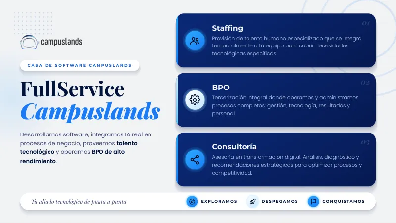
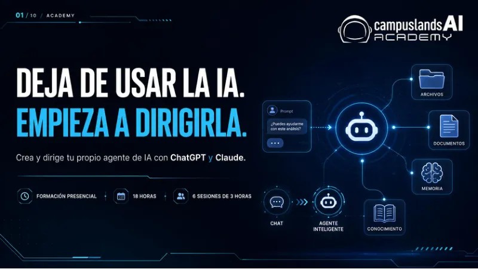
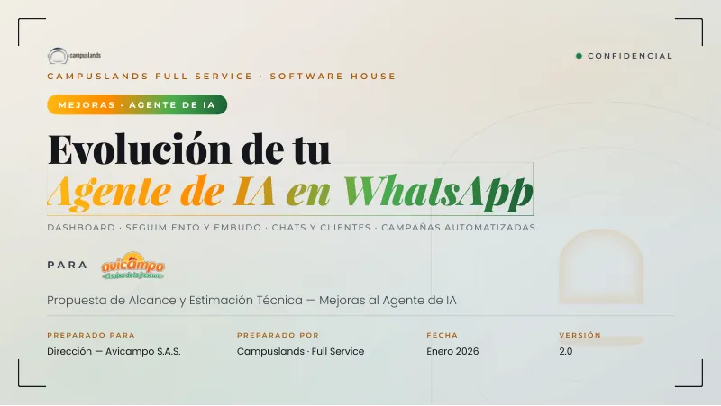
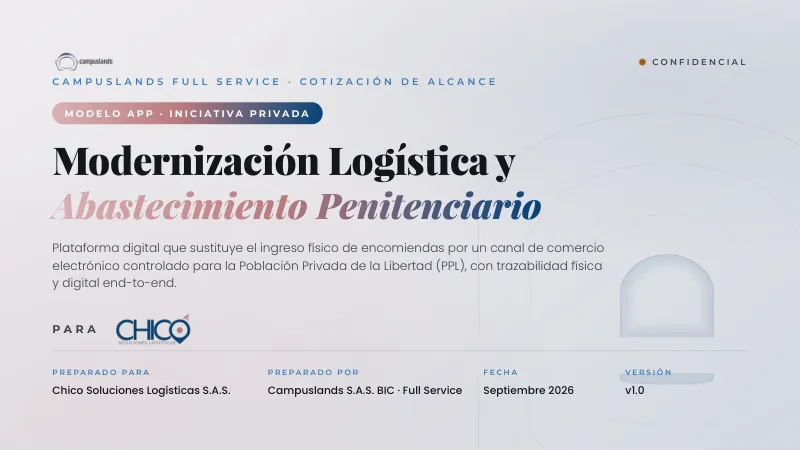
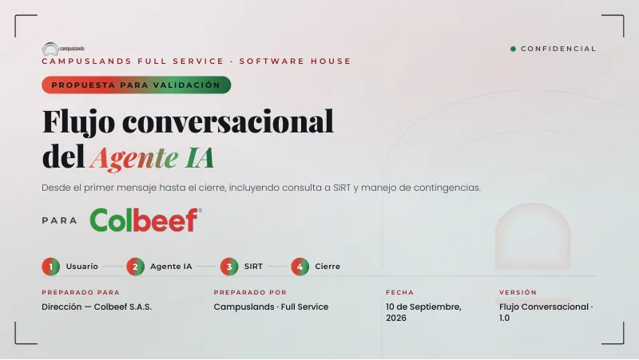
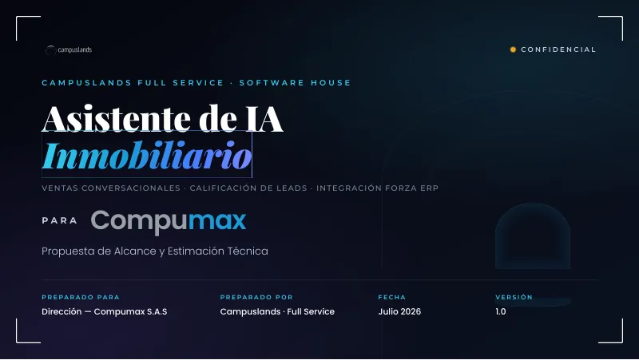

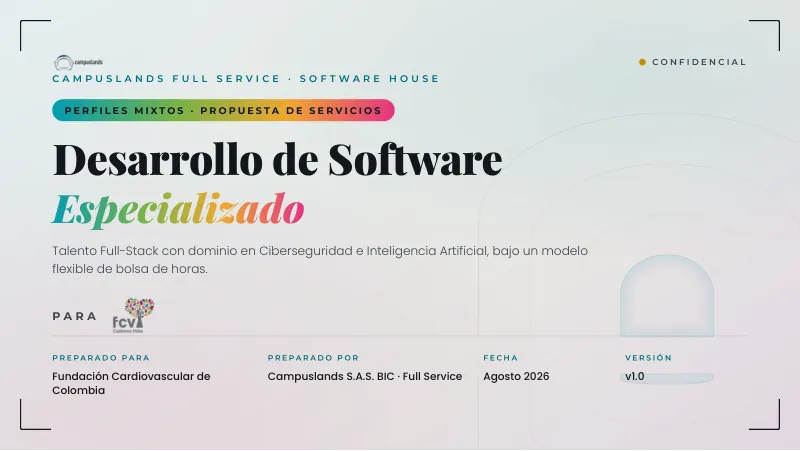
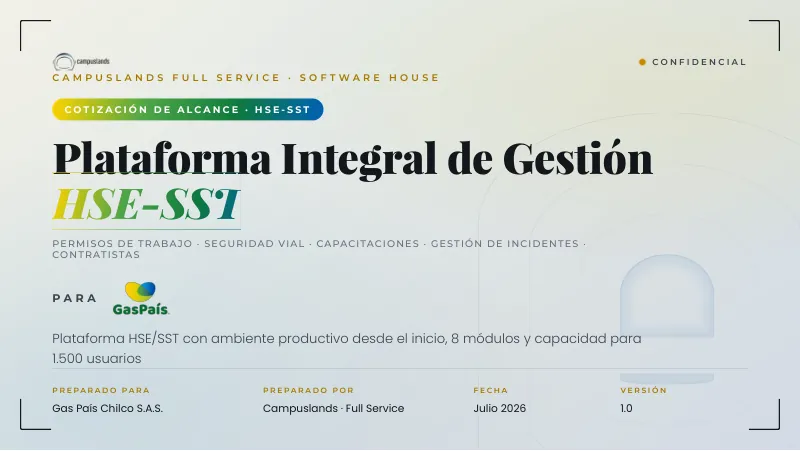


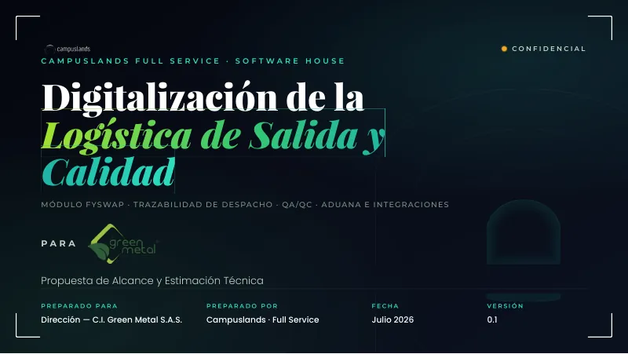

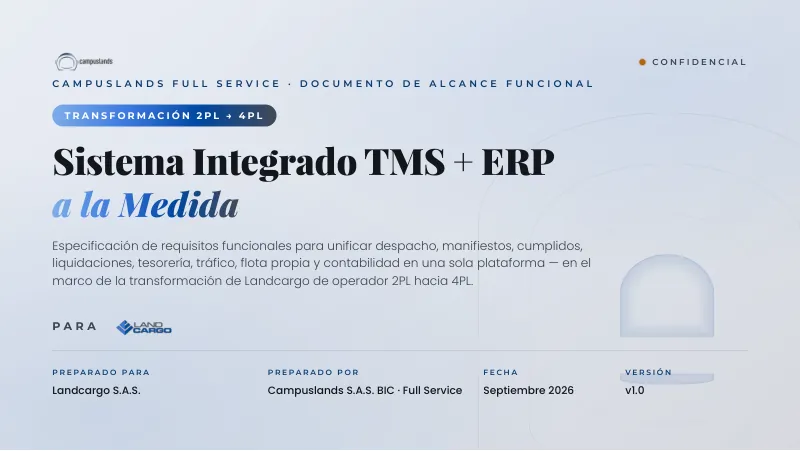
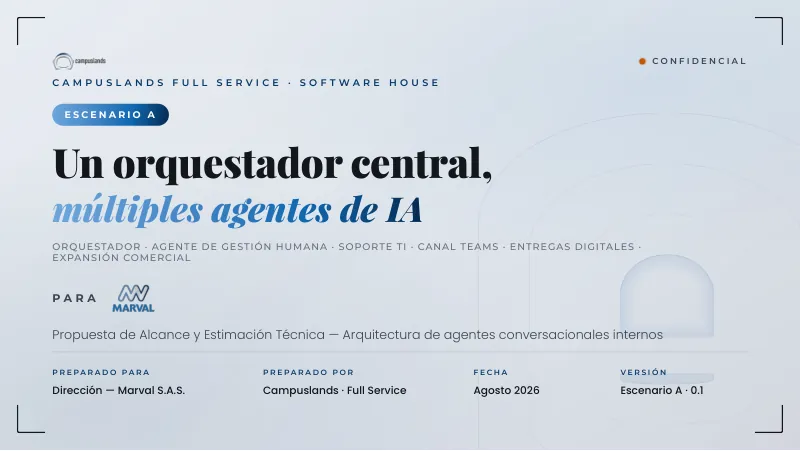
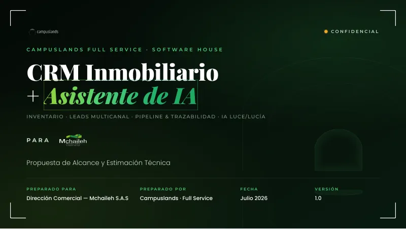
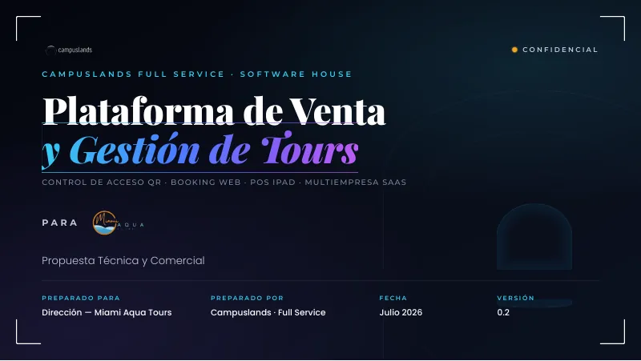
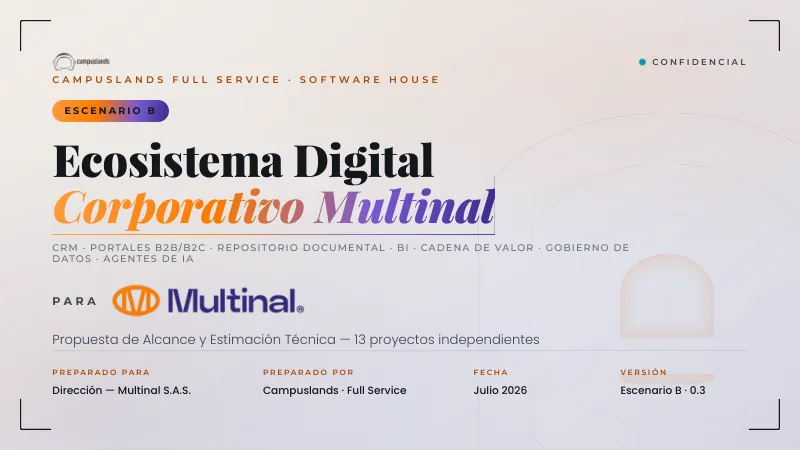

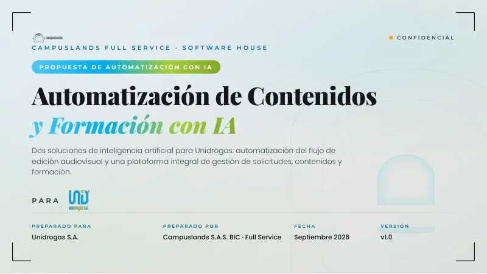
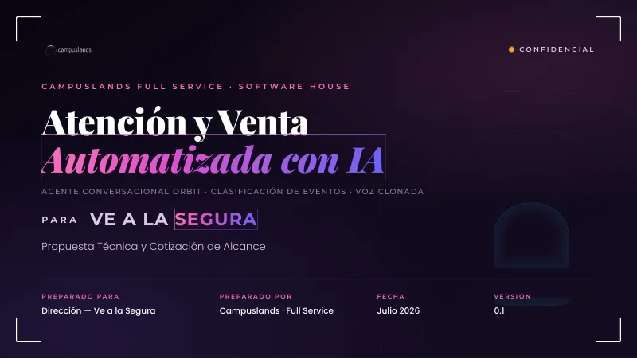
Empresas con las que hemos trabajado
El logo de cada cliente entra en la portada y el cierre de su presentación. Aquí están todos, con sus colores originales: pasa el cursor, usa las flechas o arrastra para recorrerlos.


Qué necesitas darle
Si falta información, el agente te enviará un cuestionario. Puedes adelantarte reuniendo estas seis cosas:
| Bloque | Qué incluir | Ejemplo |
|---|---|---|
| Datos generales | Nombre completo del cliente (con S.A.S. o S.A.), nombre del proyecto, cargo y área de quien recibe la propuesta, y quién lidera la cuenta | Unidrogas S.A.S. · Plataforma de Inteligencia Financiera · CFO |
| Línea base y dolores | Cifras actuales del problema, los problemas cualitativos y cómo se resume el «hoy» frente al «con la plataforma» | 4 horas manuales por reporte; información en silos |
| Arquitectura y alcance | Qué fuentes de datos se conectan, de 4 a 6 módulos clave y un ejemplo de cómo se usa | SAP, bases SQL; pregunta en lenguaje natural y respuesta de la IA |
| ROI y sector | Ahorro o retorno proyectado y casos de éxito del mismo sector | 25 % de ahorro; casos en el sector financiero |
| Condiciones comerciales | Costo total en COP, plazo en meses, esquema de pago, garantía y soporte | 40 % anticipo, 40 % hito intermedio, 20 % entrega |
| Logo del cliente | PNG o SVG con fondo transparente | logo-cliente.png |
El título de la página web lleva la razón social completa del cliente, con su sufijo legal. Si no se la das, el agente te la pedirá; no la adivina.
Sobre el precio
Si tu fuente es un Excel de cotización, el agente toma el total de inversión de la celda Y122 del Excel (el precio con el margen comercial completo), no del PDF de alcance, que puede mostrar otra cifra. Si encuentra una diferencia entre ambos, te consultará antes de construir. El desglose por módulo es material interno: en la presentación el total aparece como una cifra única, salvo que pidas lo contrario.
Paso a paso
1. Comparte lo que tienes
Pega o adjunta los alcances, notas de reunión o cotización. Cuanto más completo sea, menos preguntas recibirás.
2. Aprueba el plan
Antes de diseñar, el agente te muestra una propuesta lámina por lámina: qué dirá cada una, qué tipo de diseño usará y por qué cada bloque está donde está. No empieza a construir hasta que lo confirmes. Este es el mejor momento para cambiar el orden, quitar o fusionar láminas.
3. Revisa el borrador
Recibirás la presentación completa. El agente ya la habrá revisado con una herramienta automática y a la vista, pero tú conoces a tu cliente mejor que nadie.
4. Pide ajustes
Dile qué cambiar. Después de cada ajuste el agente vuelve a verificar la presentación completa, porque un cambio pequeño puede mover el resto.
5. Recibe el PDF y el link
Cuando das tu visto bueno, el agente exporta el PDF, registra la presentación en el portal de proyectos, la publica y te comparte el link. Si no pudo confirmar que la publicación ya está activa, te lo dice.
Cómo es el plan por lámina
El plan es una lista corta. Este es un ejemplo ilustrativo de cómo se ve, con datos inventados:
| Lámina | Qué responde | Contenido | Por qué está así |
|---|---|---|---|
| 1 · Portada | ¿De quién y para quién? | Logos de ambas empresas, título y fecha | Es lo primero que ve el cliente |
| 2 · Contexto | ¿Qué le duele? | El problema en una frase y un dato clave | El dato va destacado para que se lea primero |
| 3 · Cifras | ¿Qué tan grande es? | Cuatro números de la línea base | Cuatro es el máximo que se lee de un vistazo |
| 4 · Solución | ¿Qué proponemos? | Los módulos principales | Una cuadrícula agrupa lo que va junto |
| 5 · Inversión | ¿Cuánto y cómo? | Total, esquema de pago y garantía | Una sola cifra, sin desglose por módulo |
| 6 · Cierre | ¿Qué sigue? | Próximos pasos y logos | Cierra con la acción que se le pide al cliente |
Si el contenido no cabe en 10 láminas, el agente fusiona (por ejemplo, contexto con reto, o inversión con condiciones de pago). Solo pasa de 10 si tú lo pides con esas palabras.
Ejemplos de conversación
Empezar
Aprobar el plan
Cambiar el orden o el contenido
Pedir un rediseño
Si una lámina se ve «plana», no la retoca: la rediseña con otra estructura.
Qué recibes
Siempre recibes los dos. Ninguno reemplaza al otro: el PDF es el archivo que no cambia; el link es la versión interactiva.
Cómo revisar el borrador
Tómate unos minutos para recorrer cada lámina con estas preguntas:
- ¿El nombre del cliente está bien escrito? Razón social completa, con el sufijo legal.
- ¿Cada cifra tiene respaldo? Si ves un número que no reconoces, pregunta de dónde sale.
- ¿La historia se entiende? Del problema a la solución y al siguiente paso.
- ¿Los dos logos se ven del mismo tamaño? Si uno domina, pídelo y se ajusta.
- ¿El total de inversión es el correcto? Compáralo con tu cotización.
- ¿Hay demasiado texto en alguna lámina? Pide que la divida o la simplifique.
- ¿Algo suena a promesa que no podemos cumplir? Pídele que lo reformule.
Cómo pedir ajustes
Cuanto más concreto seas, mejor. Algunos ejemplos de lo que puedes escribir:
| Quieres… | Puedes decir… |
|---|---|
| Cambiar un texto | «En la lámina 3, cambia “reducción de costos” por “ahorro operativo”» |
| Reordenar | «Pasa la lámina de inversión al final, antes del cierre» |
| Quitar o fusionar | «Une contexto y reto en una sola lámina» |
| Cambiar un número | «El plazo es 5 meses, no 4. Actualiza todas las láminas donde aparezca» |
| Ajustar los logos | «El logo del cliente se ve más grande que el nuestro» |
| Pedir otro diseño | «La lámina 6 se ve plana; hazla con otra estructura» |
| Pasar de 10 láminas | «Necesito 12 láminas en total» (dilo textualmente) |
El portal de proyectos
Las presentaciones se registran en un portal web de Full Service, donde puedes encontrar los proyectos de todos los clientes. Para entrar, necesitas una cuenta; si todavía no tienes, un administrador debe darte acceso.
Qué puedes hacer en el portal
- Buscar y filtrar proyectos por categoría, cliente o fecha, y verlos en cuadrícula o en lista.
- Abrir la ficha de un proyecto, con botones para abrir la presentación, ver el PDF, copiar el enlace y abrir la cotización (si tiene una).
- Cotizar desde la ficha, con el cotizador integrado.
Permisos
| Rol | Puede |
|---|---|
| Propietario | Todo |
| Administrador | Gestionar proyectos y usuarios |
| Usuario | Crear y editar proyectos, y cotizar |
| Visitante | Solo ver: catálogo, fichas, enlaces, PDF y cotizaciones |
En los proyectos que crea el agente, la fecha, el link de la presentación y el PDF aparecen con un candado y no se pueden editar desde el portal. Si algo de eso necesita corregirse, pídeselo al agente.
Preguntas frecuentes
¿Puedo usar los colores de mi cliente? No. Los colores son siempre los de Campuslands. Del cliente se usa su logo y su contenido.
¿Y si necesito más de 10 láminas? Pídelo con esas palabras. Antes de aceptar, el agente intentará fusionar contenido.
¿Por qué me pide el logo transparente? Porque sobre fondo blanco un logo con su propio fondo se vería como un cuadro pegado. Si el logo es claro o blanco, te pedirá la versión a color u oscura.
¿Por qué no se muestra el precio de cada módulo? Porque el desglose es material interno. El total aparece como una sola cifra. Si necesitas mostrar el desglose, pídelo expresamente.
¿Cuánto tarda? Depende de la información. Con los datos completos, el plan llega rápido; el borrador se entrega ya verificado.
El link no abre. Avísale al agente: él confirma si la publicación ya está activa. Mientras tanto puedes enviar el PDF.
¿Puedo editar el PDF? El PDF no se edita. Si necesitas un cambio, pídeselo al agente y se genera de nuevo.
Glosario
| Término | Qué significa |
|---|---|
| Deck | Una presentación completa |
| Lámina | Cada página de la presentación |
| Co-branding | Mostrar juntos los logos de Campuslands y del cliente |
| ROI | Retorno de inversión: cuánto se gana o se ahorra frente a lo que se invierte |
| Slug | El nombre corto que forma la dirección web de la presentación |
| Razón social | El nombre legal completo de la empresa |
| Portal | La página web donde se registran todos los proyectos |
Si algo no funciona
Si el agente no responde como esperas, repite tu pedido con más contexto. Si algo del diseño te parece incorrecto, descríbelo con una frase concreta («en la lámina 5 el texto se sale de la tarjeta»). Si el problema persiste, avisa a quien mantiene el agente; su guía técnica incluye una tabla de problemas frecuentes.